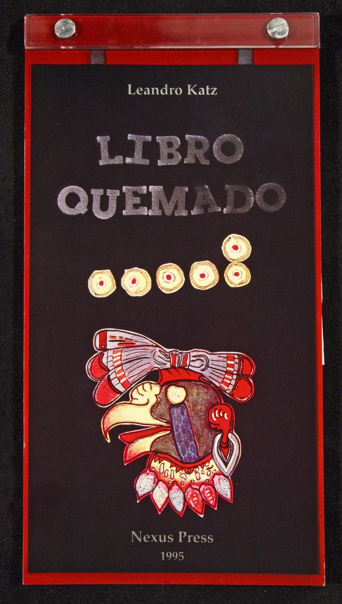

Contemporary Expressions of Nahua Culture

Created in response to the 500th anniversary of Columbus' first voyage, the bilingual Libro Quemado uses poetic language to envision the destruction of hundreds of Mayan books at Maní, Yucatan in 1652, under the orders of Spanish Friar Diego de Landa. As Landa related in his Account of the Affairs of the Yucatan, “...because (the books) contain nothing but superstition and the Devil's falsehoods, we burned them all.” Despite similar actions by the Spanish across colonial Mexico, indigenous bookmaking traditions continued during colonialism and a number of prehispanic books have survived to influence contemporary artists.
Gift of Ellen T. Baird